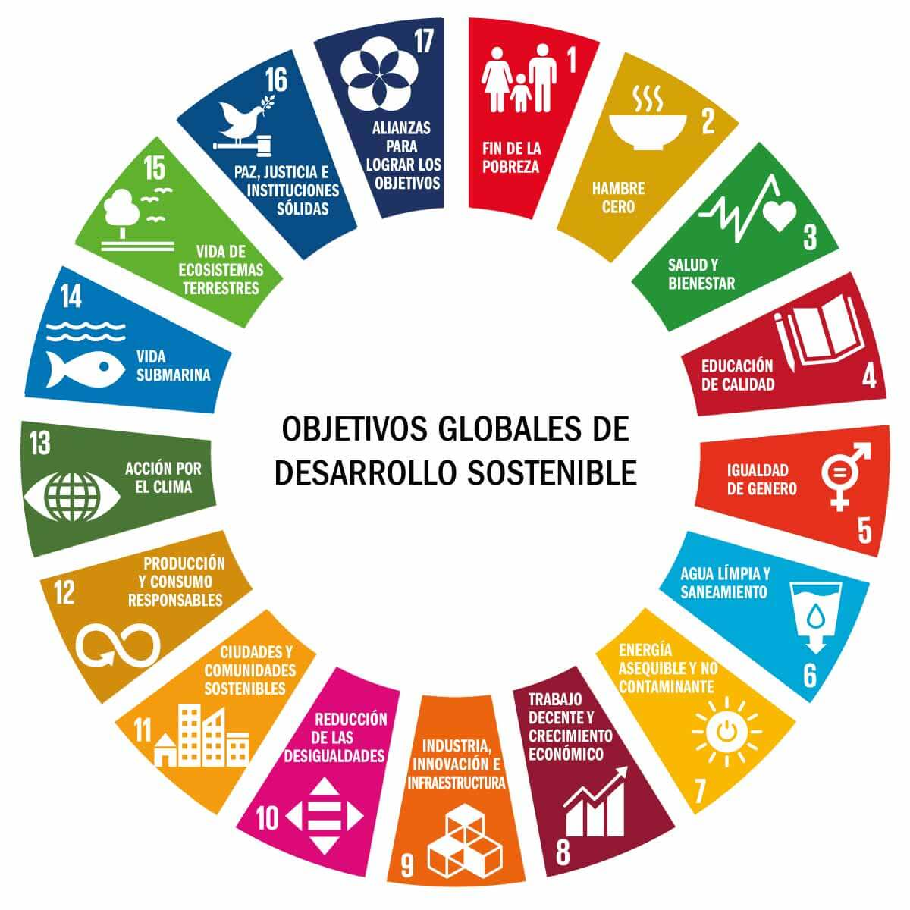

-
¿Qué es la sostenibilidad y qué papel juega en el sector tecnológico actual? La sostenibilidad es la capacidad de satisfacer las necesidades actuales sin comprometer la capacidad de futuras generaciones para satisfacer las suyas. Juega un papel importante ya que se esta intentando crear una tecnología sostenible basada en utilizar procesos enfocados a minimizar el impacto medioambiental.
-
¿Qué dimensiones abarca (ambiental, social, económica)?
- La ambiental que es la conservación de recursos naturales, la protección del medio ambiente y la gestion sostenible de los recursos.
- La social que busca el bienestar de todas las personas, el accceso a la educación y la salud, etc.
-
La económica es la que se enfoca en la viabilidad económica a largo plazo, etc.
-
¿Qué son los aspectos ASG y por qué deben interesar a una empresa tecnológica? Los aspectos ASG (Ambientales, Sociales y Gobernanza) sirven para medir la sostenibilidad de una empresa. Esto les interesa a las empresas ya que influye en su reputación y en su capacidad para operar a largo plazo.
- La Ambiental se enfoca en el impacto que tiene la empresa en el medio ambiente
- La Social aborda la relación de la empresaa con las personas como sus empleados, sus clientes, etc.
-
La Gobernanza se refiere a como se dirige y como se gestiona la empresa.
-
¿Qué marcos internacionales impulsan la sostenibilidad (Agenda 2030, ODS)?
- El acuerdo de París, que se enfoca en el cambio climático y sus impactos negativos.
-
El Marco de Sendai, que se enfoca en los desastres naturales y en reducir los riesgos que conllevan.
-
¿Qué tres ODS están más relacionados con la informática o el desarrollo de software? El ODS 16: Paz, justicia e intituciones sólidas, ya que promueve el garantizar el acceso público a la información y la protección de las libertades fundamentales. Gracias a la informática y el software podemos acceder a la información desde nuestro propio dispositivo.
El ODS 9: Industria, innovación e infraestructura, ya que promueve la industrialización sostenible y fomenta la inovación. La informática y el desarrollo de software no paran de innovar y de mejorar segun van pasando los años.
El ODS 10: Reducción de las desigualdades, ya que promueve la igualdad en los países y entre países. Gracias a la informática y el desarrollo de software podemos adaptar aplicaciones y dispositivos para que cualquiera pueda utilizarlos.
| ODS 16 | ODS 9 | ODS 10 |
|---|---|---|
| Paz, justicia e intituciones sólidas | Industria, innovación e infraestructura | Reducción de las desigualdades |
| ------------------------------------ | --------------------------------------- | ------------------------------ |
| Garantizar acceso a la información | Innovaciones y mejoras en el software | Adaptación de aplicaciones y dispositivos |
